Insobfuscation
TLDR
We were dealing with a binary that was asking for user input. With this input it was then filling a Sudoku grid in a peculiar way during the call to the first virtualized function and was checking for the grid correctness in the second virtualized function. It was possible to reverse just the first function and be able to figure out what was going on, and what input we were supposed to give to the binary.
Congratulations to those who solved it, and for those who were able to dump the bytecode and the shuffling map. There were quite a few handlers, and coding a disassembler to reconstruct the original meaning of the code can take quite some time.
In this writeup I tried to use ChatGPT to see how one could have solved the challenge using it. I was quite impressed by the python code produced to retrieve the original function assembly code starting with only the bytecode. It was correct on its first try, and it took not so much time, in almost one hour I was able to achieve the disassembly of the bytecode.
I know that there is some better way to do it, so I would be more than happy if you could share how you did it :).
Source code can be found here: https://github.com/reversing-stuff/code-example/tree/main/Insobfuscation-INSO2025
In the main.cpp there is the command used to compile the binary. You can try to recompile it but this time without stripping it ;).
Static analysis
Detect It Easy
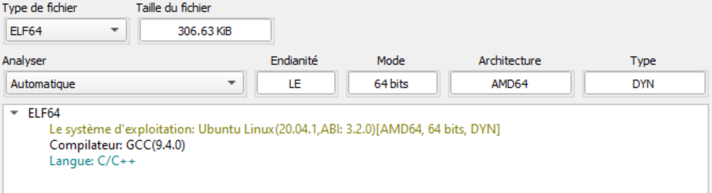Using Detect It Easy we observe that the binary is a 64bit ELF, compiled with GCC and is written in C/C++. So far so good, nothing to worry about, we can continue with Ghidra.
Ghidra
Main
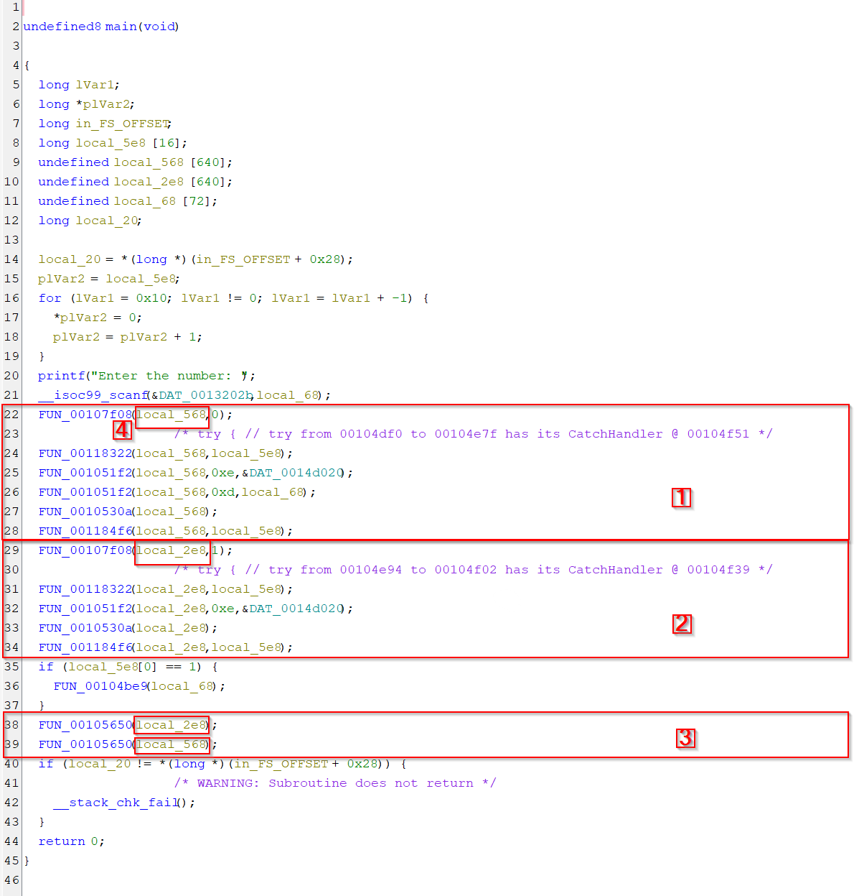Tinkering points
- Block 1 and 2 share similitudes, they call FUN_00107f08, then FUN_0118322, then one or multiple times FUN_001051f2, then FUN_0010530a and finally FUN_001184f6.
- In each of blocks 1 and 2 the first argument for every function is local_568 for the first block and local_2e8 for the second block.
- In block 3 we see that FUN_00105650 is called with our two variables.
Inference & Deduction
As we are dealing with C++ code (we can see the usage of cout in another code excerpt) we can make some educated guesses about what we are dealing with in the main function.
- FUN_00107f08 which is the first function called is a Class Constructor, which take an integer as input, we can see that the first time it is called it is with argument 0 and the second time with argument 1, maybe this it to differentiate between two phases(Spoiler: and indeed it is. It used this to get the correct shufflingmap/bytecode).
- Local_568 and local_2e8 are the famous “this” variable, and therefore the calling convention is __thiscall.
- FUN_00105650 is the Class Destructor.
FUN_00118322
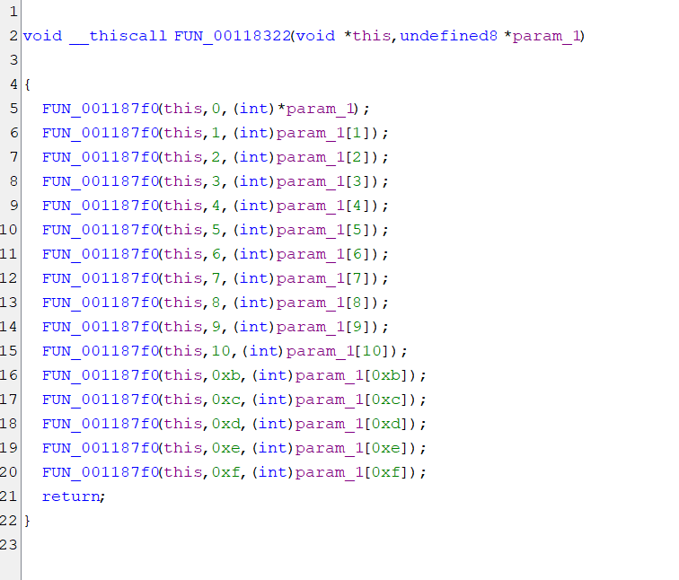 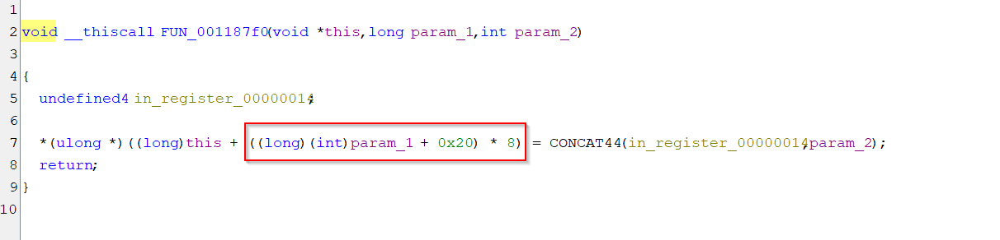Tinkering points
- The function FUN_00118322 is just a wrapper around the function FUN_001187f0.
- Parameter_1 is an array of 0xf elements.
- FUN_001187f0 is a setter. It will set the class structure located at offset +0x20 with the value from parameter_1.
- We can see that the elements are referenced using * 8, which suggests that each element is 64bit.
Inference & Deduction
These two functions save the value of a 0xf elements array into a class array.
FUN_001051f2

Tinkering points
- This function is a setter, it takes an offset as parameter_1 and a value as parameter_2.
Inference & Deduction
We know that the first variable of our unknown class is probably an array of at least 0xe elements as our two function calls set the member 0xd and 0xe, with respectively our user input at index 0xd and an address at 0xe.
During the second phase, we see that the same function is called with the same address. This time we are not calling it again with our user input.
Guess:
During the first phase we do something with our user input and the address used, maybe it stores our user input at that address, or at some offset from this address. And the second phase will check if everything that has been filled at that address is correct.
FUN_001184f6
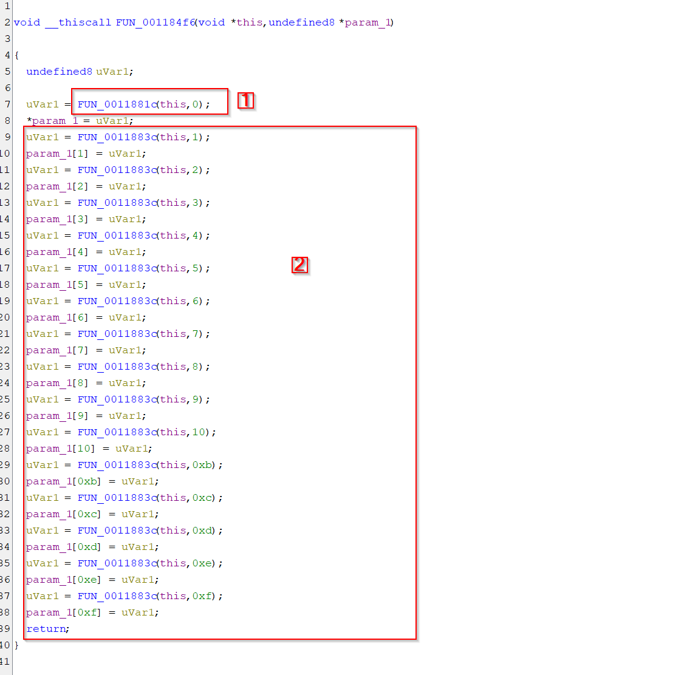 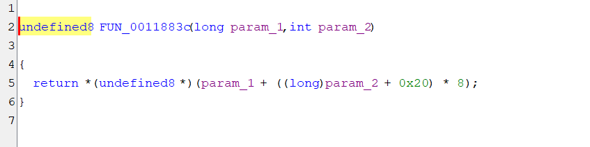Tinkering points
- FUN_0011883c does the exact opposite of FUN_001187f0 which was a setter. So, this function is a getter.
- We have a different function for element 0 of our array of 16 elements. This function is also a getter but for the same structure as the one used in FUN_001051f2. But this time we don’t get the 0xe or 0xd elements, but the elements 0.
Inference & Deduction
This function restores our saved array, with the peculiarities that elements 0 is fetched from a different location and as you can see from the end of the second phase, this value will be tested
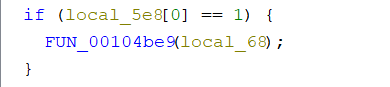
Guess:
This is fetching the result a function call, likely fetching the result, which is stored in RAX in common cases, but this time RAX is symbolized with elements 0 of our class structures array.
Sum up
If we take the main function again, we can say this:
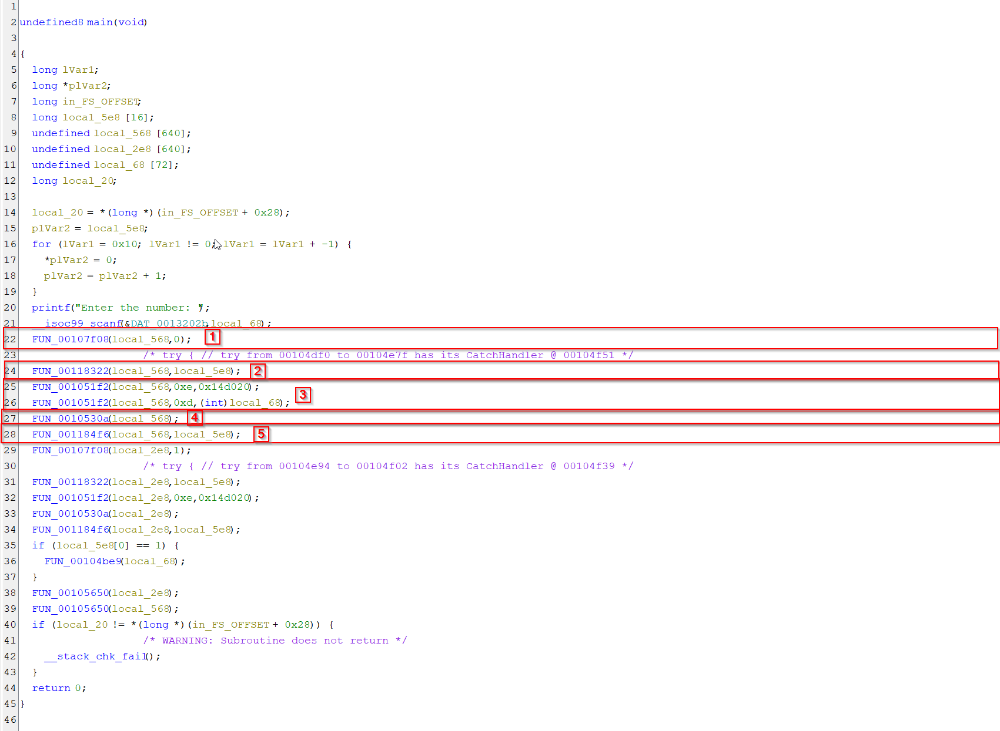Tinkering points
- Block 1 is the constructor
- Block 2 is the backup phase
- Block 3 is the initialization phase
- Block 4 is the execution phase
- Block 5 restores and fetches results from point 4
- It repeats two times
FUN_10530a
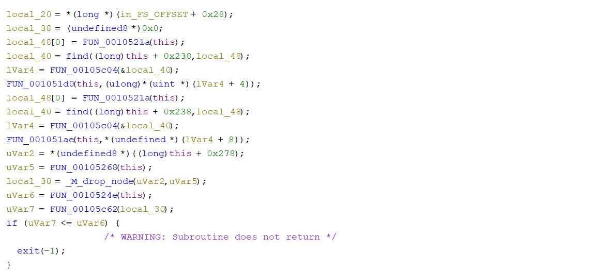Tinkering points
- Local_38 is a function pointer initialized to “nullptr”. We can say this because later it is used like this: 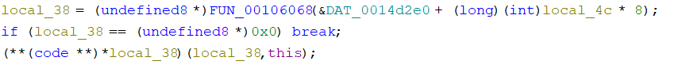
- FUN_0010521a is a getter of the variable at offset +400.
- The variable is used as the value to find in the associative container at +0x238, this can be a map, an unoreder_map, a set, etc. Something wich store its elements as
- It returns an iterator in local_40 which is then deferenced in the next line. lVar4 contains the line matching the key stored in local_48.
- The first value is then accessed using lVar4 +4 and the second one later using lVar4+8, which suggest that our class structure at +0x238 is an associative container whose key is an int, and posesses two values, so it may possesses an std:pair element as value. With the first element being also 4 bytes.
- The process repeats, but this times we use the second element of the pair to set a variables as opposed to the first element of the pair in the first case. 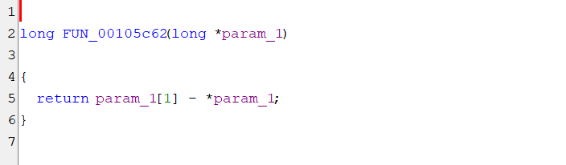
- This is the implementation of std::vector::size().
- So local_30 is an element of a std::vector. Which will be bound checked against uVar6 which is the element at index +0x180 set previously and get in FUN_0010524.
- uVar2 is a pointer to a std::array at +0x278 and uVar5 is an element in it. Local_30 is the result of the at method with index uVar5. We check the size of it to know if the element uVar6 is in range, meaning that we have an std::vector of std::vector at index +x0278.
Putting everything together
We begin by Getting a value stored at +400, which is used as a key for our map at +0x238. From our map we retrieve a std::pair, which will be used to set variable at +0x188 and +0x198.
The variable at +0x188 is used to index an std::vector(+0x278) with each element being another std::vector. We retrieve this element of our vector and we check if our variable at +0x180 is within its range. If not we exit. Then we fetch the content of our inner std::vector using FUN_00105c86 which map the data method of std::vector.
The variable 0x180 is an index in the inner std::vector. We use it to access its element here: 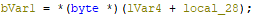
Element that we will XOR with our variable at +0x198. We can assume that this variable acts as a key and rename the functions accordingly.
Its next usage will be with our function pointer discussed previously, local_38. It will be used as index in our array of function pointer DAT_0014d2e0 initialised to 0, but changed in some parts of the code, notabely in this function 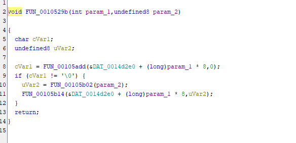
If we analyze the function which are called before we have: 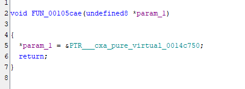
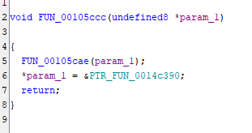
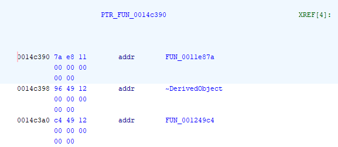
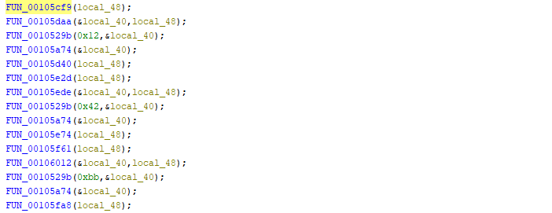
Basically, all these functions do is initialize our array of functions pointer DAT_0014d2e0. They register different values, for example here we have 0x12, 0x42 and 0xbb with different matching functions pointer. All these functions pointed to by our function’s pointer are virtual functions which are derived from a base class.
Next we have: 
Tinkering points
- Block 1: check for completion by getting the variable at +0x199
- Block 2: virtual function call. The function associated with the byte in our inner std::vector
- Block 3: Do the same stuff as we already discussed, it fetches a line in oud outer std::vector, then XOR its byte at the position determined by the variable +0x180
Inference & Deduction
We are in the presence of a Virtual Machine, more precisely in the dispatcher while loop.
Our handler table is the array DAT_0014d2e0, and our bytecode is in a std::vector<std::vector> at +0x278. Each line of this vector is the representation of an instruction, for example an add instructions. The bytes representing our instructions are XORed, at least one of them, the one which determines the associated handler, namely the Opcode. Our byte array is related to another structure at +0x238 which is a map <idx0, (idx1, XORKey)>. Idx0 is used to fetch the corresponding (idx1, XORKey) pair. Idx1 is used to fetch a line in our byte array which is something like this {{Instructions 0 bytes}, {Instructions 1 bytes}, …}, so it is fetching the Instructions to execute. Either it is sequential, or it can be in random order. Only a dynamic analysis can tell us now.
Initially our handler table was empty, and we saw that it is registering opcode one by one when needed. To start with we already have bytes 0x12, 0x42 and 0xbb registered. We will have to see with what handler they are associated with later.
Dynamic analysis
Objectives
- Dump the structure at +0x238.
- Dump our byte array at +0x278.
- Match opcodes to handler.
Objective 1: dumping structure at +0x238.
To dump this first structure, we set a breakpoint at this line
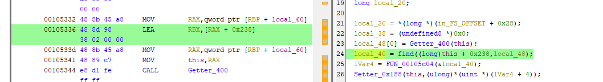
Stepping one time we got
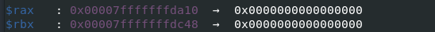
$rax points to the “this” and $rbx points to our std::map.
To correctly dump the structure, we have to understand how it is laid out in memory. This structure uses a red black tree, and we have the following:
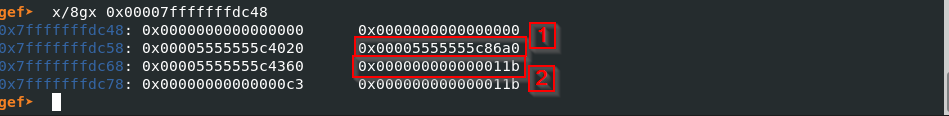
The first rectangle is the address of the first node, and the second rectangle is the size of the structure. Here 0x11b which is equal to 283, so our element will go from 0->282
Here is the script to dump the structure in gdb
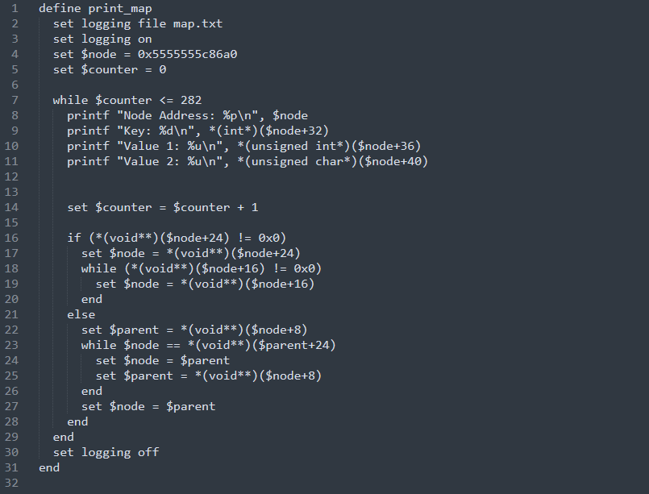
To use it:
- source print_map.txt
- print_map
Objective 2: dumping byte array at +0x278
Same as before, set a breakpoint here:
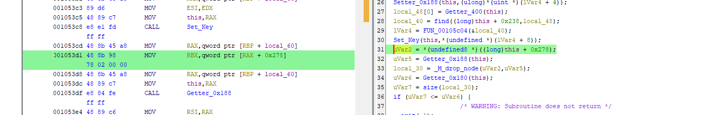
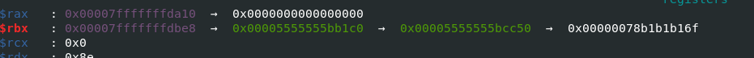
Then enter these commands:
- set logging file bytearray.txt
- set logging on
- x/1132gx 0x00005555555bcc50
We use the fact that the related map structure had 283 elements, here we see that each element is stored in the heap, the smallest bin, and we must multiply the number of elements by 4 to get them all.
Making sense of it
We have something like this
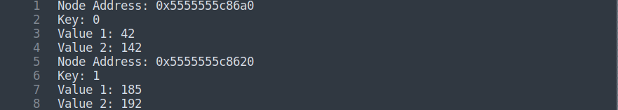
It means that the first instruction to be executed(idx:0) is located at idx 42 in our bytearray, and all bytes have been xored with key 142. The next instruction, idx:1 is at idx 185 in our bytearray and has beend xored with key 192.
We have to write a python script to recover the original code, which means that we will have to unxor all bytes and place them in the correct order.
Using the python script reconstruct_bytearray.py that you can find in the github repo, we can retrieve the original bytecode.
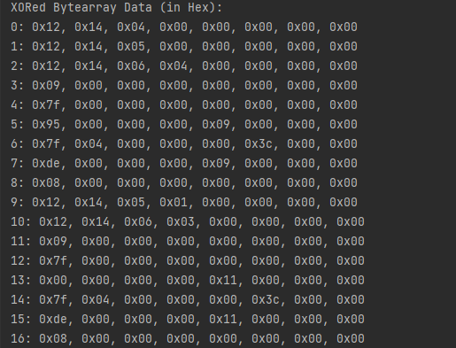
Now all we have to do is understand each opcode/instruction.
Objective3: Matching opcodes to handlers
Using the script here dump_opcode_gandler.gdb we can easily get some opcodes with their corresponding handlers. It takes quite a long time due to the nature of the program and the fact that the AntiDebug handler will redirect execution to a random instruction instead of quitting.
But even if we let the script run for 1-2 minutes, we will have enough to start our handlers reversing process, as you can see in the dump opcodeToHandler.txt.
In this dump we will have access to the 0xC4 opcode’s handler, which is the famous AntiDebug one. Knowing this we can patch it by changing the return value of the test, tricking it into believing that we are not debugging it.
Note that there are Dispatcher instructions, which act differently according to the next byte, the one just after the opcode. But in our dump we will have them, and by manually reversing them we will figure it out.
After some time reversing the handlers which are simple as they do few instructions, are not obfuscated, and are written directly in C++, we can list them in the table below:
| Handler | Byte |
|---|---|
| MovDispatcherHandler | 0x12 |
| MovDispatcherHandler | 0x42 |
| MovRegisterRegister | 0x13 |
| MoveRegisterConstant | 0x14 |
| EndHandler | 0x66 |
| EndHandler | 0x40 |
| AntiDebugHandler | 0xc4 |
| AddDisptacherHandler | 0x87 |
| AddDisptacherHandler | 0x41 |
| AddRegisterRegisterHandler | 0x89 |
| AddRegisterRegisterHandler | 0x07 |
| AddRegisterConstantHandler | 0x88 |
| SubDisptacherHandler | 0x1C |
| SubRegisterRegisterHandler | 0x1D |
| SubRegisterConstantHandler | 0x1E |
| MulDispatcherHandler | 0x9F |
| MulRegisterRegisterHandler | 0x9E |
| MulRegisterConstantHandler | 0x9D |
| IncHandler | 0x72 |
| DecHandler | 0x48 |
| XorHandler | 0x2E |
| XorRegisterRegisterHandler | 0x2F |
| XorRegisterConstantHandler | 0x30 |
| ANDHandler | 0x5F |
| SHLHandler | 0x68 |
| SHLHandler | 0x46 |
| SHRHandler | 0x67 |
| SARHandler | 0x69 |
| SARHandler | 0x44 |
| CMPHandler | 0x7F |
| CMPHandler | 0x71 |
| CMPConstantHandler | 0x61 |
| CMPRegisterHandler | 0x7e |
| JLHandler | 0x3C |
| JLEHandler | 0x36 |
| JGHandler | 0xDE |
| JZHandler | 0x96 |
| JNZHandler | 0x95 |
| CALL_INHandler | 0xAA |
| CALL_OUTHandler | 0xBB |
| NOPHandler | 0xCC |
| NOPHandler | 0xCA |
| LDRHandler | 0xDD |
| LDRHandler | 0x45 |
| LDRHandler | 0x43 |
| LDRHandler | 0xD0 |
| STRConstantHandler | 0xEE |
| STRRegisterHandler | 0xEB |
| JMPHandler | 0x22 |
| IMULHandler | 0x24 |
| LOT | 0x9 |
| LOT2 | 0x8 |
Post Processing
Objectives
- Convert our raw bytecode to pseudo ASM
- Convert our pseudo ASM to C
Objective 1: Convert our raw bytecode to pseudo ASM
You can find all python code used here: https://github.com/reversing-stuff/code-example/tree/main/Insobfuscation-INSO2025/scripts
From the first script we got:
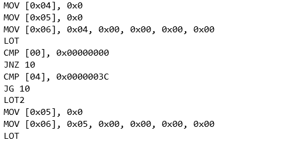
Next we have to:
- Replace all jump instructions numbers, using a label, e.g JMP 10 becomes JUMP line_10
- Replace all LOT and LOT2 with their corresponding actions.
- Replace all [number] with a corresponding register. e.g 0 for RAX, 1 for RBX, 13 for parameter_2, 14 for parameter_1, local_x for the other
- Keep numbers without brakcets alone
From the next python scripts we got:
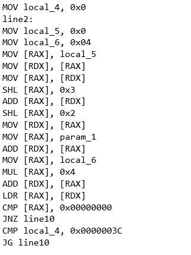
Objective 2: Convert our pseudo ASM to C
When we are done writing our ASM code back, we can, if we want compile it back, and decompile it with Ghidra to have a clear C representation. This step is not needed, but if you like visualizing pseudo C rather than ASM, you can do it.
We end up with:
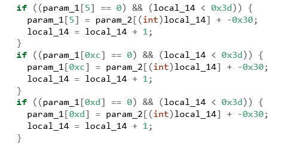
And when asking ChatGPT what this code is doing, even though we could have figured it out ourself:
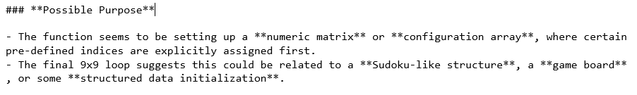
Indeed, this code is filling a 9 by 9 sudoku grid, which we can find here in the main function, during the phase where it sets up the arguments for our virtualized function: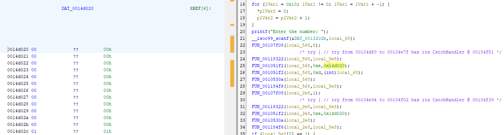
Remembering that we have to deal with int values so each number is 4 bytes.
Solving it
Objectives
- Write a python sudoku resolver
- Understand how our input is used to fill the grid
- PWNING IT!
Testing our input we got 
What about the second virtualized function?
The second function is responsible for checking if the sudoku grid is valid. We can reverse it to understand what we were dealing with, but if we understood that the first function was dealing with a sudoku grid, it was enough to get the flag.
Conclusion
I hope you enjoyed the challenge, even though reversing and obtaining the real ASM code back can get a bit tedious at times! :D
← Back to root